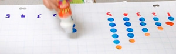
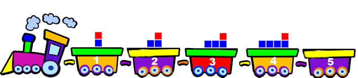
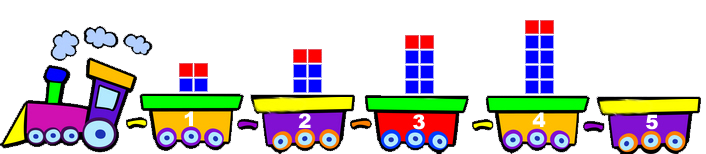
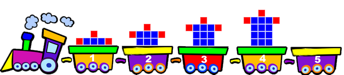
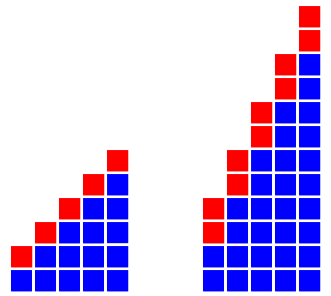
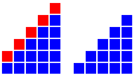
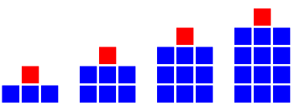
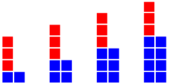
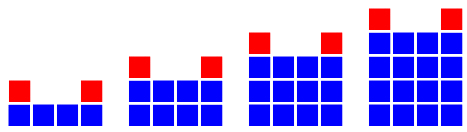

Sample Page: Graphing Growing Patterns
Materials:
- linking cubes to model growing patterns
- colour dabbers to create bar graphs of growing patterns
- square inch grid chart paper to create bar graphs or use Square Grid Handout (PDF) and colour crayons colour pencils to match numbers in tables to the colours of the linking cubes used
- Graphing Growing Patterns handout (PDF) to complete patterning activities #1 below, or copy tables in your notebook.
- Graphing Growing Patterns handout #2 (PDF) to complete activity #3, or use your notebook.
- Graphing Growing Patterns Practice (PDF) to complete practice activity #4, or use your notebook.
Bar graphs of Growing Patterns

Graph each of the 3 patterns below on inch grid chart paper using colour dabbers, or use colour crayons and the Square Grid Handout (PDF). The first four stages of the first two patterns are shown below.
- 
- 
- 
Which One is Steeper?
-
Imagine the bar graphs as staircases, as shown below.
- Which staircase would be most difficult to climb? Why?

-
Why are some graphs steeper than others?
- Is it because of the blue blocks, the red blocks, or because of both?
-
HINT:
Which staircase would be most difficult to climb? Why?

-
Do you think the following statement is true?
- "The tallest bar graph is always the steepest."
Can you draw two bar graphs to prove that this statement is false?
Tables of Values and Bar Graphs
Graph each of the 3 patterns below on inch grid chart paper using colour dabbers, or use colour crayons and the Square Grid
Handout (PDF). The first four stages of the first two patterns are shown below.
Practice
- Represent each pattern as a bar graph.
- 
- 
- 
- Complete the table. Draw a bar graph to represent the pattern.
- Create a new growing pattern in the table below. Draw a matching bar graph.